Тема №3. Устройство и эксплуатация систем передачи с частотным разделением каналов
Занятие №1. Основные характеристики каналов тональной частоты.
Учебные вопросы:
Литература:
- Многоканальные системы передачи, Ч.1. Теоретические основы построения МСП. – Мн.: БГУИР, 2010.
- Многоканальные системы передачи (часть 2). Учебно-методическое пособие «Аппаратура МКСП с ЧРК». – Мн.: БГУИР, 2010.
- Учебно-наглядное пособие «Альбом схем аппаратуры МКСП». – Мн.: БГУИР, 2010.
- Кирилов В.И. Учебное пособие «Многоканальные системы передачи»: – М.: Новое знание, 2003.
Компьютерные программы, наглядные пособия и технические средства обучения:
1. Понятие о канале связи. Требования, предъявляемые к каналам связи.
Канал связи — совокупность линейных и станционных устройств, обеспечивающих при включении оконечных аппаратов связь данного вида между абонентами разных пунктов
Исходя из определения оконечные аппараты (телефонные, телеграфные и т.д.) не являются принадлежностью канала. Канал существует независимо от того, включены или нет оконечные аппараты и передается ли по каналу информация или в данное время он свободен.
В настоящее время стандартизированы следующие типы каналов связи:
- канал тональной частоты (КТЧ) с эффективной полосой 0,3—3,4 кГц, используются для телефонной и фототелеграфной связи, для передачи данных и многоканального телеграфирования
- предгрупповой широкополосный канал с эффективной полосой 12,3—23,4кГц (сокращенно «канал 12—24кГц»)
- первичный широкополосный канал с эффективной полосой 60,6—107,7 кГц (сокращенно «канал 60—108кГц»). Предгрупповой и первичный широкополосные каналы связи предназначены для передачи данных с высокими скоростями
- вторичный широкополосный канал с эффективной полосой 312,3—551,4 кГц (сокращенно «канал 312—552кГц»), используются для передачи газет и высокоскоростной передачи данных (ПД)
- телевизионные каналы с эффективной полосой частот первичного сигнала 50 Гц —6 МГц
Канал связи подразделяется на несколько независимых участков.
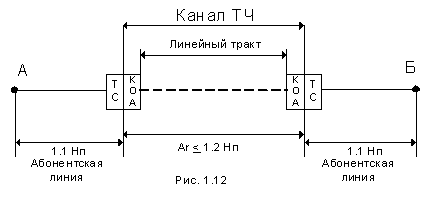Рис 1.12
Пример схемы дальней связи между двумя абонентами
На рис. 1.12 показана схема дальней телефонной связи между абонентами разных пунктов. По сети внутренней (местной) связи абонент пункта А соединяется со своей телефонной станцией ТС (междугородний коммутатор), где получает соединение с ТС пункта Б, и затем вновь по сети внутренней связи — с абонентом Б. Из схемы следует, что связь проходит по абонентским линиям — каналам местной связи и по каналу дальней связи, который не закреплен за каким либо абонентом, а может быть предоставлен любой паре из них.
- канал связи, организованный по физической цепи — канал низкой частоты НЧ
- канал связи, полученный с помощью аппаратуры уплотнения — канал ТЧ
Линейный тракт системы уплотнения — усилительные участки и промежуточные усилители, находящиеся между двумя оконечными станциями
Границами канала ТЧ являются соответствующие входы (выходы) каналообразующей аппаратуры. По этой причине разграничиваются и электрические характеристики каналов ТЧ и соединительных (абонентских) линий.
Для соединительных (абонентских) линий основными параметрами являются:
- рабочий диапазон частот (не менее 0,-3,4 кГц для КТЧ)
- затухание, вносимое в сигнал с частотой 800 Гц (не более 0,1 Нп)
Рабочие единицы передачи. Основные методы измерений
Высокое качество каналов дальней связи обеспечивается тщательным выполнением норм на электрические характеристики аппаратуры, линий, магистралей в целом и каждого канала в отдельности. В технике связи представляется более удобным оценивать мощности, напряжения и токи сигналов не их абсолютными значениями в ватах, вольтах и амперах, а в относительных единицах — уровнях мощности, напряжения и тока. При этом свойства четырехполюсников (каналов связи) будут определятся логарифмами отношений между мощностями (напряжениями, токами) во входной и выходной цепях.
Удобство такой оценки заключаются в следующем:
- потери энергии в линии описываются экспоненциальными зависимостями
- чувствительность органов слуха к силе звукового сигнала подчиняется логарифмическому закону
- при использовании логарифмических единиц упрощаются математические расчеты: действия умножения и деления заменяются сложением и вычитанием и т.д.
- порядок логарифмических единиц, с которыми приходится оперировать, оказывается более низким, чем при использовании абсолютных величин
Исторически сложилось так, что в технике связи разных стран применялись логарифмические единицы измерений либо на основе десятичных логарифмов (децибелы), либо на основе натуральных логарифмов (неперы), а часто и те и другие вместе. Такое положение вызывало неудобство в организации международных связей. Поэтому МККТТ рекомендовал перейти к единым логарифмическим мерам, причем более удобным были признаны децибелы.
Учитывая огромный парк существующей аппаратуры и сеть каналов связи, нормы на характеристики которых были заданы в неперах, а также и то, что существующие измерительные приборы градуированы в неперах, временно разрешено применение старых единиц.
Уровни передачи
Абсолютные уровни мощности, напряжения и тока определяются следующими формулами:
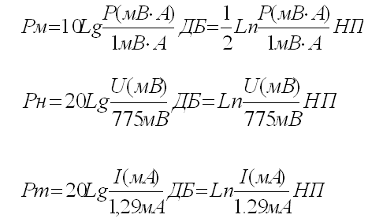Здесь Р - полная мощность, U и I – действующие значения напряжения и тока в данных участках цепи.
1 мВ•А, 775 мВ 1,29 мА — соответственно полная мощность, напряжение и ток, принятые за единичные
Коэффициенты, стоящие перед логарифмами выбраны для подходящего масштаба единиц и для того, что мощность пропорциональна квадрату напряжения (тока).
Из формул следует — 1Нп ?8,69дБ и 1дБ?0,115Нп
Изменение мощности или напряжения сигнала по тракту передачи удобно оценивать относительными уровнями мощности и напряжения:
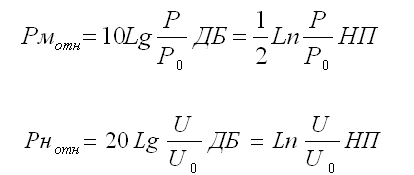где P и U — мощность и напряжение в рассматриваемых точках, а Р0 и U0 — мощность и напряжение в точках цепи, принятых за начало.
Для этой же цели еще более удобными оказываются измерительные уровни.
Измерительный уровень — абсолютный уровень в рассматриваемых точках системы (канала), когда в начале этой системы включен нормальный генератор.
Нормальный генератор — генератор с ЭДС 2х775 мВ и внутренним сопротивлением 600 Ом. Поскольку входное сопротивление канала, как правило, активно и также равно 600 Ом, ко входу канала оказывается подведенным абсолютный нулевой уровень мощности, напряжения и тока (1 мВ•А, 775 мВ 1,29 мА). Частота нормального генератора может быть любой, однако на практике, если это специально не оговорено считают частоту нормального генератора равной 800 Гц.
Таким образом, нулевому абсолютному уровню мощности соответствует мощность 1 мВ•А, нулевому абсолютному уровню напряжения — напряжение 775 мВ, нулевому абсолютному уровню тока — ток 1,29 мА.
Определение абсолютной уровней мощности, напряжения и тока взаимно независимы, поэтому рассчитанные или измеренные в одних и тех же токах уровни мощности, напряжения и тока будут, вообще говоря, разными. И лишь в случае, когда сопротивление в данных точках цепи равно 600 Ом, абсолютные уровни мощности, напряжения и тока оказываются численно равными. Это объясняется выбором величин, принятых за единицу:
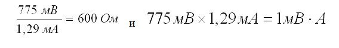Наминал сопротивления 600 Ом исторически появился в технике проводной связи как среднее значение модуля волнового сопротивления воздушной медной линии. Мощность 1 мВ.•А считалось средней мощностью телефонного аппарата, работающего на передачу (в действительности, эт мощность несколько меньше).
Измерение уровней передачи
Для определения уровня сигнала в данных точках цепи достаточно знать абсолютный уровень напряжения и сопротивление нагрузки, по которым можно легко вычислить абсолютный уровень мощности или тока. Относительные и измерительные уровни выражаются через абсолютные.
Измерение абсолютного уровня производится с помощью указателя уровня. Указатель уровня — чувствительный вольтметр переменного тока , шкала которого проградуирована не в вольтах, а величинах 20Lg (U(мв)/775) или Ln(U(мв)/775). Обычный указатель уровня содержит входное устройство, усилительную часть на электронных лампах или транзисторах, детектор и стрелочный прибор со шкалой в неперах (децибелах). Выше упоминалось о сопротивлении 600 Ом, являющемся номиналом нагрузки канала. Со временем, по мере освоения диапазона все более высоких частот, в технике проводной связи наряду с сопротивлением 600 Ом пришлось ввести еще два номинала сопротивлений: 135 и 75 Ом.
Сопротивление 135 Ом — среднее значение модуля волнового сопротивления симметричного кабеля первых типов.
Сопротивление 75 Ом —волновое сопротивление симметричного кабеля
Во входном устройстве указателя уровня предусматривается переключатель, обеспечивающий несколько значений входного сопротивления: высокоомное, 600 и 135 Ом. Также во входном устройстве имеется переключатель чувствительности, выполненный таким образом, что к показаниям шкалы прибора следует прибавлять целое число децибел или непер, обозначенных у данного положения переключателя.
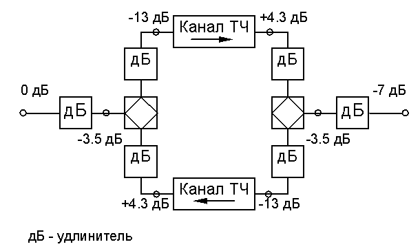Номинальные измерительные уровни канала
СООТНОШЕНИЕ МЕЖДУ НЕПЕРАМИ И ДЕЦИБЕЛАМИ:
1 НП = 8,69 ДБ
1 ДБ = 0,115 НП.
Общая характеристика канала тональной частоты.
Каналы тональной частоты (ТЧ) многоканальных систем передачи используются для передачи сигналов информации различного вида: телефонной (речи), тонального телеграфа, фототелеграф, передачи данных и др.
Основные требования к каналу ТЧ:
- полоса эффективно передаваемых частот ЭППЧ при максимальной дальности связи должна быть 300 – 3400 Гц:
- вход и выход канала должны быть трансформаторными с номинальным сопротивлением 600 Ом (коэффициент отражения по отношению к номиналу не более 10 %).
Каналы ТЧ могут быть простыми и составными.
Простой канал ТЧ – это такой канал, который на всей протяженности не имеет транзитов по ТЧ (в полосе частот 0,3 – 3,4 кГц). В этом случае каналообразующая аппаратура имеется только в пунктах окончания канала, в промежуточных пунктах могут быть транзиты по высокой частоте (по групповым трактам).
Составной канал ТЧ – это канал, имеющий транзиты по ТЧ, т. е. состоящий из нескольких каскадно-соединенных простых каналов ТЧ.
Транзитом называется взаимное соединение простых каналов. Различают транзиты отдельных каналов тональной частоты – транзиты по ТЧ и транзиты по групповым трактам (по высокой частоте) – транзиты по ВЧ.
Транзиты по ВЧ могут быть:
- по предгрупповым трактам в диапазоне частот 12 – 24 кГц
- по первичным трактам в диапазоне частот 60 – 108 кГц
- по вторичным трактам в диапазоне частот 312 – 552 кГц
- по трактам более высокого порядка.
Параметры канала ТЧ нормируются в ЭППЧ в зависимости от его протяженности и структуры (наличия транзитов различного вида или числа последовательно соединенных простых каналов).
Так, в ЕАСС максимальная протяженность канала ТЧ составляет 13900 км с числом транзитов по ТЧ не более 10 (11 последовательно соединенных простых каналов). При организации международной связи протяженность канала ТЧ может достигать 25000 км с максимальным числом транзитов по ТЧ до 11 (12 простых каналов).
Канал ТЧ протяженностью 13900 км определенной структуры называется номинальной цепью канала ТЧ страны. Кроме транзитов по ТЧ на этой дальности может быть не более 49 транзитов высокой частоты (ВЧ), из них по каждому первичному. вторичному, третичному тракту или трактам более высокого порядка – не более 15 транзитов, а суммарное число транзитов по предгрупповому и первичному трактам – не более 19.
Максимальная дальность и структура канала ТЧ военно-полевых систем передачи, а также нормы на параметры определяются в соответствующей технической документации.
В зависимости от схемы окончания канал ТЧ может быть в одном из четырех режимов:
- 4х пр. оконечный
- 4х пр. транзитный
- 2х пр. оконечный
- 2х пр. транзитный
1. Схема 4-проводного окончания (4ПР ОК) (режим 4-проводный оконечный, рис. 3.2).
Режим 4ПР ОК используется при включении оконечных устройств. Номинальный уровень входного сигнала (гнезда ПЕР) РВХ = - 13 дБ (- 1,5 Нп), а выходного сигнала (гнезда ПР) РВЫХ = +4 дБ (+0,5 Нп)).
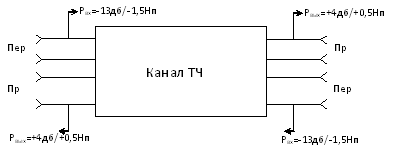Рис. 3.2. Схема канала ТЧ в 4 – проводном режиме
2. Схема 4–проводного транзита (4ПР ТР). Для получения этого режима на входы канал, показанного на рис. 3.2 (гнезда ПЕР), включаются удлинители затухания по 17 дБ (2 Нп).
В этом случае входной и выходной уровни одинаковы:
РВХ = РВЫХ = +4 дБ (+0,5 Нп).
В некоторых образцах аппаратуры схема 4 – проводного транзита образуется включением на входы канал (гнезда ПЕР) удлинителя 13 дБ (1,5 Нп) или 9,5 дБ (1,1 Нп); а на выходы канала (гнезда ПР) - удлинителя 4 дБ (0,5 Нп) или 8,5 дБ (0,9 Нп) с обеспечением уровней рвх = рвых = 0 дБ (0 Нп) или
рвх – рвых = - 3,5 дБ (- 0,4 Нп). Режим применяется для осуществления транзитов по ТЧ.
3. Схема 2–проводного окончания (2ПР ОК). Она образуется с помощью дифференциальной системы (ДС).
Режим 2ПР ОК. (рис. 3.3.) применяется при подключении к каналу ТЧ абонентских телефонных аппаратов. В этом режиме номинальные уровни равны: РВХ = 0 дБ (0 Нп); РВЫХ = -7 дБ (- 0,3 Нп).
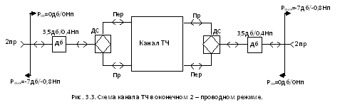4. Схема 2–проводного транзита (2ПР ТР). Режим 2ПР ТР (рис. 3.4.) применяется для временного 2–проводного транзита (соединения на время разговора) двух каналов ТЧ на коммутаторе.
В режиме 2–проводный транзит уровни передачи и приема (гнездо 2ПР) одинаковы: рвх = рвых = - 3,5 дБ (- 0,4 Нп).
Транзитные удлинители затуханием 3,5 дБ (0,4 Нп) могут включаться и выключаться на 2–проводном входе канала непосредственно в аппаратуре каналообразования или на коммутаторе дальней связи.
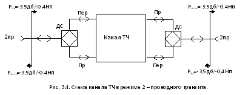2. Характеристики, параметры каналов тональной частоты и методика их инструментальной проверки.
При проектировании систем и магистралей дальней связи, настройке и эксплуатации каналов их качество оценивается следующими основными электрическими характеристиками:
- остаточное затухание «усиление» и его стабильность по времени (ОЗ);
- частотная характеристика остаточного затухания;
- напряжение (уровень) невзвешенных шумов;
- защищенность от переходных сигналов между направлениями передачи и приема в канале тональной частоты;
- защищенность от внятных переходных помех между каналами;
- амплитудная характеристика;
- изменение частоты передаваемого сигнала;
Остаточное затухание (усиление) канала тональной частоты
Остаточным затуханием (усилением) канала ТЧ называется его рабочее затухание, измеренное на частоте 800 Гц при номинальных нагрузках 600 Ом:
ar = 10 Lg Po / Pn , дБ,
где Po – мощность, которую генератор частоты 800 Гц отдает согласованной нагрузке;
Pn – мощность выделяемая в нагрузке канала.
Физическая сущность названия «остаточное затухание» видна из другого определения.
Остаточное затухание – это разность между, суммой всех затуханий и суммой всех усилений в канале при условии, согласованного включения всех его элементов:
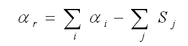где alpha(i)– затухание i-го элемента канала
Sj – усиление j-го усилителя в канале.
Если 1-я сумма больше второй, то в канале остаточное затухание. Если же наоборот, вторая сумма больше, то остаточное затухание будет отрицательным, значит, в канале не затухание, а усиление.
Третье определение остаточного затухания наиболее приемлемо в практике:
Остаточное затухание канала — разность между двумя уровнями сигнала с частотой 800Гц на входе и выходе канала при согласованных включениях генератора и измерителя уровня
(Zг=Zвх, Zиу=Zвых, Zвх=Zвых=600Ом):
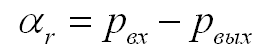Остаточное затухание (особенно его стабильность во времени) является одним из основных параметров, обеспечивающих качество передачи сигналов. Снижение уровня принимаемого сигнала ухудшает слышимость телефонной передачи, в сочетании с другими мешающими факторами, может вызвать ошибки в приеме сигналов тонального телеграфа, передаче данных, а при значительных снижениях уровня (ниже порога чувствительности приемных устройств) прием дискретной информации становится невозможным.
Нормирование
Номинальные значения уровней достаточного затухания нормируются для различных режимов канала ТЧ на частоте 800Гц (см. табл.)
Таблица
| Режим канала тональной частоты | Уровень на входе канала Рвх дБ/Нп | Уровень на выходе канала Рвых дБ/Нп | Остаточное затухание r, дБ/Нп |
|---|---|---|---|
| 2-проводный оконечный | 0/0 | -7,0/-0,8 | 7,0/0,8 |
| 2-проводный оконечный | 0/0 | -7,0/-0,8 | 7,0/0,8 |
| 2-проводный транзит | -3,5/-0,4 | -3,5/-0,4 | 0/0 |
| 4-проводный оконечный | -13/-1,5 | +4,3/+0,5 | -17,0/-2,0 |
| 4-проводный транзит | +4,0/+0,5 | +4,0/+0,5 | 0/0 |
Погрешность остаточного затухания должна быть не более 0,5дБ (0,05Нп)
Измерение и оценка.
Схема измерения остаточного затухания (усиления) канала в режиме 4ПР ОК приведена на рис. 3.5.
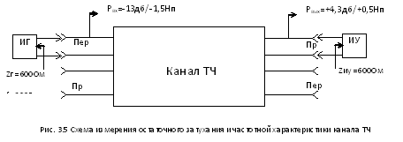- Подать на вход канала в точку номинального относительного уровня -13дБ (-1,5Нп) от измерительного генератора ИГ с выходным сопротивлением Zr=600Ом ток частотой 800Гц с измерительным уровнем Рвх=-13дБ (-1,5Нп)
- На противоположной станции подключить к выходу канала в точке номинального относительного уровня плюс 4,3дБ (+0,5Нп) измеритель уровня ИУ с входным сопротивлением Zну 600 Ом. Установить регулятором канала (регулировкой усиления УТЧ на выходе канала) уровень Рвых=+4,3дБ (+0,5Нп).
Определить остаточное затухание по формуле: r=Рвх - Рвых или остаточное усиление по формуле :S=Рвых - Рвх,
Произвести измерение и установку остаточного затухания (усиления) КТЧ в обратном направлении передачи.
Примечания:
- Измерение и установку остаточного затухания (усиления) канала в 4-проводном режиме можно производить одновременно в обоих направлениях передачи.
- Измерение других режимах канала проводится аналогично с учетом номинальных уровней передачи.
- Измерения с использованием номинальных уровней передачи можно проводить только в часы наименьшей загрузки системы передачи и во время настроечных работ.
Остаточное затухание (усиление) считается в норме, если его значение равно номинальному (см. табл. выше) с точностью +/-0,5дБ (+/-0,06Нп).
Частотная характеристика остаточного затухания
Частотная характеристика остаточного затухания — зависимость его от частоты Ar=(f) при постоянном уровне сигнала на входе Рвх=const;
Она показывает, как изменяются уровни сигналов различных частот на выходе канала, при постоянном уровне этих сигналов на его входе. Этот параметр определяет амплитудно-частотные искажения сигнала, передаваемого по каналу. Они обусловлены главным образом количеством и качеством полосовых фильтров в аппаратуре канального преобразования оконечных пунктов и пунктов транзита по ТЧ.
Поскольку каждый транзит по ТЧ увеличивает количество каскадно-включенных в канал полосовых канальных фильтров, очевидно, что с увеличением числа транзитов по ТЧ ухудшается частотная характеристика остаточного затухания (увеличиваются амплитудно-частотные искажения сигнала, особенно на краях ЭППЧ – канала).
Амплитудно-частотные искажения в канале отрицательно сказываются на качестве передачи сигналов любого вида связей, но особенно существенно влияют на передачу дискретной информации (сигналов передачи данных тонального телеграфирования и т.п.).
Для корректирования частотной характеристики остаточного затухания КТЧ в аппаратуре имеются амплитудно-частотные корректоры, (в усилителях тональной частоты приемной части аппаратуры канального преобразования), которые позволяют с необходимой точностью устранять амплитудно-частотные искажения.
Нормирование
Частотная характеристика остаточного затухания нормируется в ЭППЧ канала, одновременно эта характеристика и определяет ее.
ЭППЧ – это такая полоса частот канала, в пределах которой при максимальной дальности связи остаточное затухание превышает свое значение на частоте 800Гц не более чем на 8,7дБ (1,0Нп). Нормы на частотную характеристику канала задаются в виде зависимости:
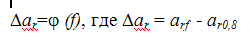т.е. отклонения между остаточным затуханием на данной частоте и остаточным затуханием на частоте 800Гц.
Для удобства пользования для КТЧ норма частотной характеристики задается в виде графика – шаблона. Если измеренная характеристика не выходит за пределы графика – шаблона, то канал по данному параметру находится в норме.
График-шаблон действителен только для определенного типа аппаратуры и при определенном числе транзитных участков простого КТЧ. Допустимые превышения (снижения) остаточного затухания относительно его значения на частоте 800 Гц задаются для каждого числа транзитных участков КТЧ.
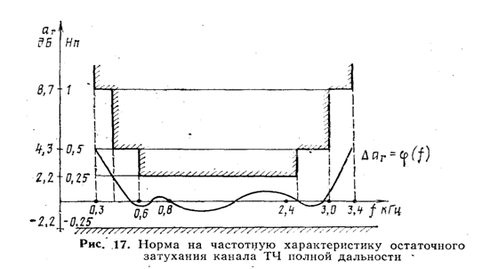На рис. 17 приведены предельные отклонения остаточного затухания для канала ТЧ полной дальности — 2500км (согласно МККТТ)
Измерение и оценка.
Измерение частотной характеристики остаточного затухания (усиления) производится с помощью встроенных приборов, а также с использованием измерительных приборов П-3211, П-322, П-32Э ИЗВЗ, П-326 и др.
Измерение частотной характеристики при использовании измерительных приборов с фиксированными частотами производится в следующем порядке (рис. 3.5.):
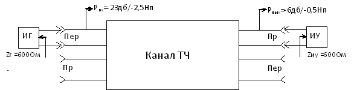Рис. 3.5 Схема измерения остаточного затухания и частотной характеристики канала ТЧ
- Установить номинальное ОЗ КТЧ на частоте 800Гц.
- Подать поочередно на вход канала от измерительного генератора с 600-омным выходом токи частот 300, 400, 600, 1200, 1400, 1600, 2000, 2400, 3000, 3400Гц с постоянным измерительным уровнем -13дБ (-1.5Нп).
- Измерить уровень этих частот на выходе тракта, приема КТЧ измерителем уровня с 600-омным входом.
- Вычислить неравномерность остаточного затухания по формуле:
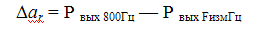
т. е. разность между уровнем сигнала на частоте - 800 Гц и уровнем сигнала на частоте из ЭППЧ канала.
Если ?ar со знаком + — это значит, что на частоте F уровень выходного сигнала меньше, чем на частоте 800 Гц и имеет место затухание данного сигнала по сравнению с сигналом на частоте 800Гц
Если ?ar со знаком - — это значит, что на частоте F уровень выходного сигнала больше, чем на частоте 800 Гц и имеет место усиление данного сигнала по сравнению с сигналом на частоте 800Гц
- Аналогично провести измерение в обратном направлении передачи.
Если неравномерность частотной характеристики канала выходит за пределы графика – шаблона, необходимо произвести ее коррекцию путем перепайки корректирующих контуров в цепи обратной связи усилителя ТЧ тракта приема канала.
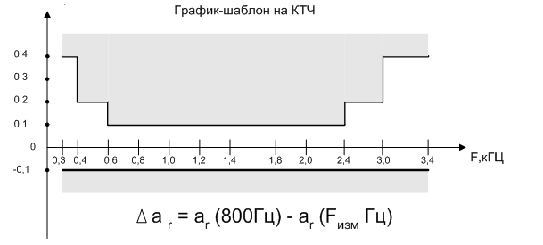Пример определения частотной характеристики КТЧ
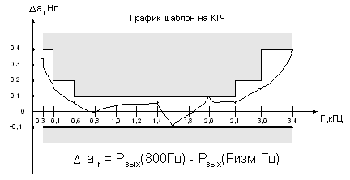Pвх (Fi) = -1.5 Нп
Pвых(800Гц) = +0,5 Нп
| Частота, Гц | Рвых (Fизм) | ?ar ,Нп |
|---|---|---|
| 300 | 0,15 | +0,35 |
| 400 | 0,35 | +0,15 |
| 600 | 0,45 | +0,05 |
| 800 | 0,5 | 0 |
| 1200 | 0,55 | -0,05 |
| 1400 | 0,45 | +0,05 |
| 1600 | 0,6 | -0,1 |
| 2000 | 0,4 | +0,1 |
| 2400 | 0,45 | +0,05 |
| 3000 | 0,35 | +0,15 |
| 3400 | 0,1 | +0,4 |
Если ?ar со знаком + — это значит, что на частоте F уровень выходного сигнала меньше, чем на частоте 800 Гц
Если ?ar со знаком - — это значит, что на частоте F уровень выходного сигнала больше, чем на частоте 800 Гц
Вывод — данный канал тональной частоты по своей частотной характеристике пригоден к эксплуатации и может быть сдан в оконечные аппаратные узла связи.
Шумы в канале ТЧ
Шумы в канале ТЧ многоканальных систем передачи являются основной причиной, которая отрицательно сказывается на качестве передачи любых видов информации.
Для передачи сигналов различных оконечных устройств требуется обеспечивать необходимое превышение сигнала относительно шума (защищенность сигнала от шума). Поэтому при нормировании мощности, напряжения или уровня сигнала в. канале. Чаще указывают точку с нулевым относительным уровнем или выход канала с относительным уровнем приема +4,3дБ (+0.5Нп).
При телефонной передаче решающее действие отдельных частотных составляющих шума неодинаково, поэтому оценка производится взвешенными единицами измерения, которые получили название псофометрических (псофометрическая мощность, псофометрическое напряжение).
Псофометрическим или взвешенным напряжением (мощностью) шума называется такое действующее значение напряжения (мощности) чистого тока с частотой 800Гц, мешающее воздействие которого на телефонную передачу такое же, как и шума во всей полосе канала.
Для оценки влияния шума на качество передачи других видов информации необходимо знать среднее значение невзвешенных уровня, напряжения или мощности. Такие единицы называются также интегральными.
Невзвешенным (интегральным) напряжением (мощностью) шума на выходе канала называют действующее значение напряжения (мощности) шума в полосе канала.
Измерение и оценка.
Измерение уровня или напряжения шума производится прибором П-323-ИШ или псофометром УНП-60(5) в следующем порядке (рис. 3.7)
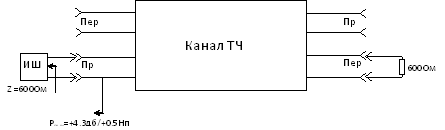- Установить номинальное ОЗ кТЧ.
- Вход тракта передачи на противоположной станции нагрузить на 600-омную нагрузку
- К выходу тракта приема канала подключить прибор (вход измерителя шума ИШ). Измерить среднее псофометрическое напряжение шума в течение любого часа наибольшей нагрузки с интервалом между замерами 1 мин. Показания следует отсчитывать за период 5с. При измерениях фиксировать среднюю величину помехи и не учитывать отдельных резких отклонений стрелки прибора (за один замер допускается не более 2 – 3 выбросов).
- На основании полученных результатов измерений вычислить среднюю арифметическую величину псофометрического напряжения шума за 1 час по формуле:
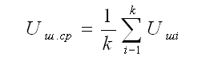
где Uшi – результат i-го измерения; k – общее число измерений.
- При необходимости измерить среднюю величину напряжения невзвешенного шума (за 1 час) в канале ТЧ аналогично измерению среднего псофометрического напряжения шума и сравнить с нормой.
- Произвести аналогичные измерения напряжения (уровня) шума в обратном направлении.
Защищенность между направлениями передачи и приема в канале тональной частоты
Защищенность между направлениями передачи и приема в канале — разность уровней сигнала и внятной помехи на выходе канала, причем внятная помеха на выходе канала обусловлена сигналом, передаваемым в тракте передачи того же канала.
Аз=Pпр-Рперех ,
где А— защищенность от переходных сигналов между направлениями передачи и приема одного канала;
Pпр — номинальный относительный уровень сигнала на выходе канала, равный +4,3дБ(+0,5Нп)
Рперех –уровень переходного сигнала на частоте 800 Гц
Причины — монтажные переходы в аппаратуре, а для однокабельных систем передачи основной причиной таких помех является переходное влияние на ближнем конце кабельных усилительных участков.
Переходные влияния особенно опасны для телефонных сигналов (проявляется как прослушивание постороннего разговора).
В большинстве систем передачи влияние одного направления канала на обратное зависит от многих причин, среди которых не последнее место занимают монтажные переходы в аппаратуре. Однако в однокабельных однополосных системах передачи (например, в полевых системах П-303, П-302, П-301) основной причиной таких помех является переходное влияние на ближнем конце кабельных усилительных участков.
Из-за относительно малых величин переходных затуханий на ближнем конце кабеля в таких системах влияние передачи на прием канала проявляется особенно сильно.
Если канал используется для телефонной связи, то переход энергии с передачи на прием своего же канала сказывается в виде некоторого усиления местного эффекта. При этом даже относительно сильное влияние не ведет к существенному ухудшению качества телефонной передачи. При использовании канала для передачи данных, тонального телеграфирования и других видов информации, для которых передаваемые в разных направлениях сигналы являются независимыми, переход энергии с передачи на прием может оказать сильное влияние на качество приема сигналов этих видов связи.
В существующих стационарных и двухкабельных полевых системах передачи защищенность между направлениями передачи и приема канала протяженностью 2500 км должна быть не менее 52 дБ (6 Нп). По нормам ЕАСС эта величина берется равной 55 дБ (6,3 Нп). В однополосных однокабельных системах такие нормы выполнить не удается и приходится ограничиваться величиной порядка 35 дБ (4 Нп) при дальности связи в 1000 км. Для некоторых существующих систем берется еще более низкая норма 26 дБ (3 Нп) при той же дальности.
Каналы, имеющие защищенность с передачи на прием менее 22 дБ (2,5 Нп), можно использовать только для телефонной связи.
В однокабельных однополосных системах наименьшая величина защищенности бывает, как правило, в верхних по линейному спектру каналах. В этих каналах и следует в первую очередь оценивать величину защищенности.
Измерение и оценка
Защищенность между направлениями передачи и приема одного и того же канала измеряется на обоих концах канала
Для измерения используются измерительный генератор и селективный (избирательный) измеритель уровня СИУ. Для измерения может использоваться любой анализатор спектра, например С4-48, приборы П-322 (СИУ-300), П-326 или прибор П-321.
Порядок измерения:
- установить номинальное остаточное затухание КТЧ
- на противоположной станции выход тракта приема и вход тракта передачи нагрузить на 600-омные нагрузки
- на вход тракта передачи КТЧ включить измерительный генератор ИГ с выходным сопротивлением 600 Ом и установить ток частоты 800 Гц с номинальным уровнем -13 дБ (-1,5Нп)
- к выходу тракта приема КТЧ подключить селективный измеритель уровня СИУ (Zиу = 600 Ом) и измерить уровень внятной переходной помехи Рп.п. на частоте 800 Гц
- вычислить защищенность между направлениями передачи и приема по формуле
Аз=Pпр-Рперех ,
где А— защищенность от переходных сигналов между направлениями передачи и приема одного канала;
Pпр — номинальный относительный уровень сигнала на выходе канала, равный +4,3дБ(+0,5Нп)
Рперех –уровень переходного сигнала на частоте 800 Гц
Защищенность от внятных переходных помех между каналами
Защищенность от переходных влияний между разными каналами — разность между номинальным относительным уровнем приема в рассматриваемой точке одного канала и уровнем токов переходного сигнала из другого канала одной системы передачи или разных систем передачи.
Аз=Pпр-Рперех ,
где А— защищенность от внятного переходного влияния между каналами ТЧ
Pпр — номинальный относительный уровень сигнала на выходе канала, равный +4,3дБ(+0,5Нп)
Рперех –уровень внятной переходной помехи на частоте 800 Гц
Внятная помеха — помеха, частота которой в подверженном влиянию канале равна частоте сигнала во влияющем канале.
Внятные помехи могут быть между одноименными каналами систем передачи, работающих по параллельным цепям проводных линий, за счет взаимных влияний между цепями, а также между разными каналами одной и той же системы передачи за счет нелинейных взаимодействий, сигналов в групповых трактах.
Внятные переходные помехи особенно опасны, если по каналам организуется телефонная связь, поскольку они проявляются в виде прослушивания постороннего разговора и отвлекают внимание слушающего от разговора своего абонента и нарушают скрытность переговоров.
Внятные помехи между каналами могут возникать по двум причинам.
- Они могут образоваться между одноименными каналами систем, работающих по параллельным цепям проводных линий, за счет взаимных влияний между цепями.
- Внятные помехи могут также возникать между разными каналами одной и той же системы, и одной из главных причин при этом является нелинейность групповых трактов.
Защищенность от внятных помех для одноименных каналов ТЧ параллельных систем стационарных симметричных кабельных линий протяженностью 2500 км должна быть не менее 58 дБ (6,7 Нп) для 90% комбинаций каналов и не менее 52 дБ (6 Нп) — для всех комбинаций каналов. Для двухкабельной полевой системы П-300/П-302 эти нормы выполняются в каналах протяженностью 850 км. В существующей стационарной и полевой аппаратуре защищенность между разными каналами одной системы протяженностью в 2500 км должна быть не менее 65 дБ (7,5 Нп), а по нормам ЕАСС — не менее 70 дБ (8 Нп).
Измерение и оценка
Защищенность от внятных переходных помех между каналами измеряется на обоих концах канала
Для измерения используются измерительный генератор и селективный (избирательный) измеритель уровня СИУ. Для измерения может использоваться любой анализатор спектра, например С4-48, приборы П-322 (СИУ-300), П-326 или прибор П-321.
Порядок измерения:
- установить номинальное остаточное затухание КТЧ
- вход подверженного влиянию канала и выход влияющего канала при измерениях нагрузить на сопротивление 600 Ом
- на вход влияющего канала подать от измерительного генератора ИГ ток частотой 800 Гц с уровнем -13 дБ (-1,5Нп)
- на выходе канала, подверженного влиянию, в точке номинального относительного уровня +4,3дБ(+0,5Нп) селективным измерителем уровня СИУ измерить уровень переходной помехи Рп.п. частотой 800 Гц
- вычислить защищенность от внятного переходного влияния между каналами ТЧ по формуле
Аз=Pпр-Рперех ,
где А— защищенность от внятного переходного влияния между каналами ТЧ
Pпр — номинальный относительный уровень сигнала на выходе канала, равный +4,3дБ(+0,5Нп)
Рперех –уровень внятной переходной помехи на частоте 800 Гц
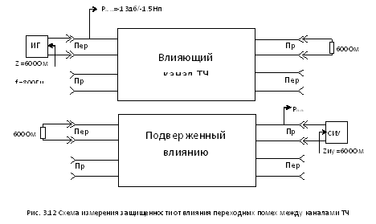Амплитудная характеристика
Амплитудная характеристика — зависимость остаточного затухания от уровня на входе канала при подаче сигнала частотой 800 Гц
ar = f (pвх)
Эта характеристика определяет порог ограничения в канале, т.е. то значение, при котором групповые устройства еще не перейдут в нелинейный режим работы.
Передающая часть схемы каждого канала ТЧ многоканальной аппаратуры, во избежание перегрузки групповых устройств этой аппаратуры снабжается ограничителем амплитуд (ОА). Амплитудная характеристика канала на переприемном участке нормируется для двух случаев: при включенном и выключенном ОА.
Примерный вид амплитудной характеристики показан на рис.6.7.

При повышении уровня по отношению к номинальному (-1,5 Нп) на 3,5 дБ (0,4 Нп) остаточное затухание должно увеличиться не более чем на 0,3 дБ (0,035Нп). В случае повышения уровня измерительного тока на входе канала до 8,7 дБ (1 НП) и до 20 дБ (2,3 Нп) остаточное затухание канала должно увеличиваться не менее чем на 1,75 дБ (0,2 Нп) и 7,0 дБ (0,8 Нп) соответственно. Последние две точки характеризуют качество работы ограничителя амплитуд.
Каждая аппаратура имеет свои нормы амплитудной характеристики, которые определены в технической документации на нее.
АХ канала ТЧ в режиме четырехпроводного оконечного выхода должна быть прямолинейной с точностью 0,4 дБ(0,05Нп) при изменении уровня сигнала с частотой 800 Гц на его входе от -30,5 дБ(-3,5Нп) до -9,5 дБ (-1,1Нп) для простого канала ТЧ и с точностью 0,4?n дБ(0,05?n Нп) для составного канала из n транзитных участков по ТЧ.
Измерение и оценка
Амплитудная характеристика остаточного затухания канала ТЧ измеряется в 4-х проводном тракте канала в обоих направлениях передачи на токе частотой 800 Гц с помощью измерительного генератора и индикатора уровня.
Измерения производятся в следующем порядке:
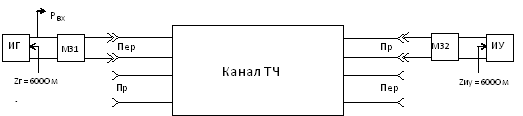Рис. 3.16 Схема измерения амплитудной характеристики канала ТЧ
- Установить номинальное остаточное затухание канала ТЧ на частоте 800 Гц
- Подать поочередно на вход канала от измерительного генератора с 600 - омным выходом ток частотой 800 Гц с измерительными уровнями -2,5Нп, -2Нп, -1,5Нп, -1Нп, -0,5Нп, 0Нп, +0,5Нп, +1Нп, +1,5 Нп
- Измерить уровень сигнала на выходе тракта приема канала ТЧ измерителем уровня с 600 - омным входом
- Вычислить неравномерность остаточного затухания по формуле:
?аr = Pвых(при Рвх = -1,5Нп) — Pвых(при Рвх = от -2,5 Нп до +1,5 Нп)
Графически — зависимость изменения уровня сигнала на выходе канала от уровня сигнала на его входе видна на следующем рисунке
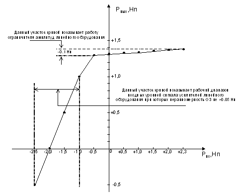Изменение частоты передаваемого сигнала
Как следует из принципов построения многоканальных систем передачи (исходящий (входящий)) сигнал каждого канала многократно преобразуется (переносится в различные области частот) перед передачей в линию, а на противоположной станции претерпевает обратные преобразования к исходному. Все преобразования осуществляются в модуляторах под воздействием несущих частот, вырабатываемых генераторным оборудованием каждой оконечной станции.
Генераторное оборудование обладает нестабильностью, что приводит к расхождению между одноименными несущими частотами оконечных станций.
Расхождение несущих частот каналообразующего (преобразовательного) оборудования вызывает изменение (сдвиг) частоты сигнала, передаваемого по каналу. Например, если несущие частоты канального преобразователя канала на станциях А и Б отличается на +-?f, то все составляющие частотного спектра передаваемого сигнала сдвигаются в ту или иную сторону также на ?f.
Искажения речевого сигнала, вызываемые подобным сдвигом (смещением) спектра частот, сказываются в основном на звучании гласных, что ведет к изменению тембра речи, ухудшению качества восприятия речи. Однако такие искажения будут заметны лишь при значительном расхождении несущих частот (порядка нескольких десятков герц).
Вместе с тем даже небольшое изменение частоты (порядка единиц герц) оказывает сильное влияние на качество работы аппаратуры тонального телеграфирования и других оконечных устройств, использующих частотную модуляцию, так как из-за сдвига частоты появляются искажения в передаче дискретных сигналов (телеграфных сигналов) типа преобладания, т.е. изменяется длительность передаваемых сигналов.
По рекомендациям МККТТ, с учетом требований указанных видов передачи, допускается изменение частоты передаваемого сигнала на переприемном участке длиной 2500 км не более чем на 1 Гц. При общей протяженности канала 12500 км изменение частоты не должно превышать 2 Гц
Нормируется:
- по рекомендациям МККТТ ?F <= +-1 Гц - на простой канал
- по рекомендациям ЕАСС ?F <= +-0,5 Гц - на простой канал
На составной канал ?F увеличивается в sqrt(n) :
?Fn = ?F * sqrt(n)
Для того, чтобы выполнить норму по данному параметру при обеспечении максимальной дальности связи, рекомендуется на транзитных станциях (или пунктов переприема по ТЧ) производить взаимную синхронизацию генераторов несущей частоты fн.
Измерение и оценка
Измерение изменения частоты передаваемого сигнала производится в 4-х проводной части канала ТЧ в обоих направлениях передачи с использованием частотомера, имеющего погрешность измерения не более 0,1 Гц.
Порядок измерения:
- На вход тракта передачи канала ТЧ от измерительного генератора подать ток частоты 800 Гц с измерительным уровнем -23 дБ (-2,5 Нп), т.е. на 10 дБ ниже номинального
- Выход канала нагрузить на 600 Ом
- К входу и выходу канала ТЧ подключить электронные частотомеры (например Ч3-38)
- Расхождение частот определить по разности показаний частотомеров.
Рис. 3.18 Схема измерения изменения частоты в канале ТЧ